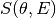
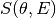

GetQsInQENSData dialog.
Table of Contents
Get Q-values in the vertical axis of a MatrixWorkspace containing QENS S(Q,E) of S(theta,E) data.
| Name | Direction | Type | Default | Description |
|---|---|---|---|---|
| InputWorkspace | Input | MatrixWorkspace | Mandatory | Input QENS data as MatrixWorkspace |
| RaiseMode | Input | boolean | False | Set to True if an Exception, instead of any empty list of Q values, is desired. |
| Qvalues | Output | dbl list |
Extract the values for momentum transfer stored in the vertical axis of a MatrixWorkspace
representing the dynamic factor  , or compute the values of a MatrixWorkspace
representing the dynamic factor .
, or compute the values of a MatrixWorkspace
representing the dynamic factor .
** Extract Q values from workspace **
workspace = LoadDaveGrp("BASIS_59689_divided.dat")
qvalues = GetQsInQENSData(workspace)
# print the first three values
vals = ' '.join(['{0:6.3f}'.format(Q) for Q in qvalues[0:3]])
print("'{}'".format(vals))
' 0.300 0.500 0.700'
workspace = LoadNexus("osiris97944_graphite002_red")
qvalues = GetQsInQENSData(workspace)
# print the first three values
vals = ' '.join(['{0:6.3f}'.format(Q) for Q in qvalues[0:3]])
print("'{}'".format(vals))
' 0.189 0.244 0.298'
Categories: AlgorithmIndex | Inelastic\Indirect
C++ source: GetQsInQENSData.cpp (last modified: 2019-06-04)
C++ header: GetQsInQENSData.h (last modified: 2018-10-05)